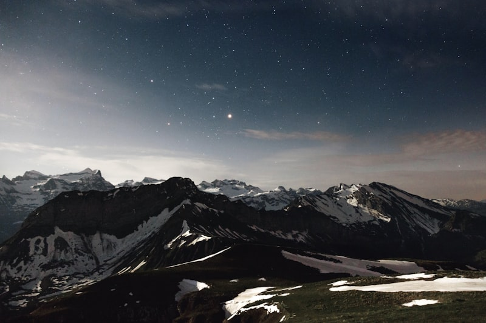

History
Istanbul, formerly known as Byzantium and Constantinople, is a city that bridges Europe and Asia across the Bosphorus Strait. With a history spanning over 2,600 years, it has been the capital of three great empires: Roman, Byzantine, and Ottoman. Its rich heritage is visible in its architecture, culture, and vibrant daily life.
Top Sights
- Hagia Sophia – A masterpiece of Byzantine architecture, now a mosque and museum.
- Blue Mosque (Sultan Ahmed Mosque) – Famous for its stunning blue tiles and six minarets.
- Topkapi Palace – The opulent residence of Ottoman sultans for centuries.
- Grand Bazaar – One of the world’s largest and oldest covered markets.
- Bosphorus – The iconic strait that divides Europe and Asia, best seen by boat.
Quick Facts
Population
~15.8 million
~15.8 million
Founded
~660 BCE
~660 BCE
Continents
Europe & Asia
Europe & Asia
UNESCO Sites
4
4
Time Zone
GMT+3
GMT+3
Gallery

